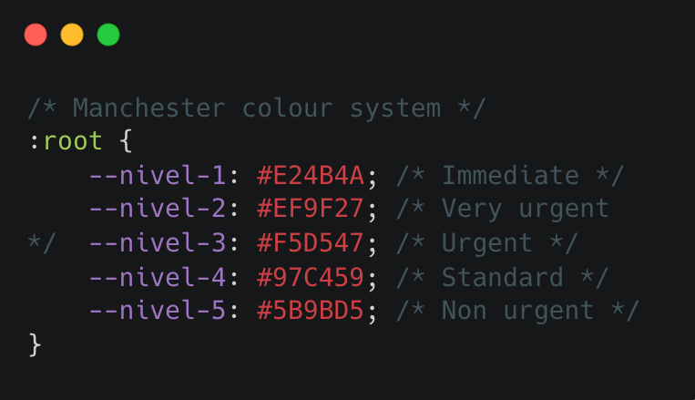
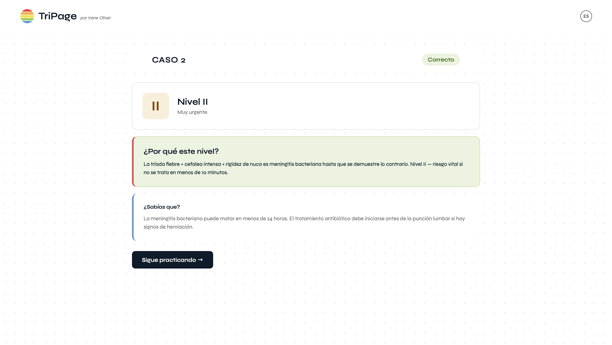

TriPage
A study conducted across 7 hospitals in Asturias found that 1 in 10 triage classifications are incorrect. Even the most experienced nurses make mistakes. The research revealed that years of practice have little correlation with accuracy, but simulation based training does.

Manchester colour system. CSS variables used to define the 5 triage levels

Why I built this
Before coding I studied nursing. I saw firsthand what happens in an emergency department during a mass casualty event or when the service is overwhelmed. The Manchester Triage System is what decides who gets care first — and getting it wrong has real consequences. No free web-based tool existed to practice it.
The process
I started on paper. I considered flashcards, random cases, categorising by clinical type — cardiovascular, trauma, neurological. But categorising by type gave hints away. In real emergency departments you don't know what's coming. I decided to filter by difficulty instead. I spoke with medicine students at Universitat Pompeu Fabra — they confirmed nothing like this exists and it would help them prepare for the ECOE exam.


Current status
Currently in validation with medicine students at Universitat Pompeu Fabra. JavaScript logic is pending implementation — design and all 10 clinical cases are complete.